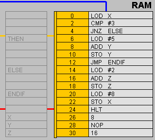
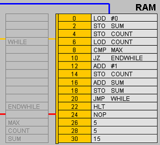

This CPU Visual Simulator allows you to enter and visualize the execution of assembly language code. Instructions and numeric data can be inserted or modified directly in RAM. It is possible to define "labels" (identifiers to be used in place of memory addresses) in the greyed table on the left of the RAM: these labels can then be used as parameters in jump instructions, or as variable identifiers. At any time, it is possible to switch between symbolic and binary representations. It is also possible to directly modify the Program Counter, in order to set the next instruction that will be executed.
Editing shortcuts
| CTRL + C | Copy |
| CTRL + V | Paste |
| CTRL + X | Cut |
| CTRL + S | Shift down from selected cell (included), writing a NOP in its previous position |
| CTRL + W | Shift up from selected cell, overwriting the selected cell with the value below it |
| Data Flow | ||
|---|---|---|
| LOD X 00000100 |
LOD #X 00010100 |
Load content of Memory Location X (or number #X) into the Accumulator. |
| STO Y 00000101 |
Store the value of the Accumulator into Memory Location X. | |
| Control Flow | ||
| JMP P 00001100 |
Unconditional jump to the instruction at location P. | |
| JZ P 00001101 |
Jump on Zero: if Flag Z is set, go to instruction number P, otherwise go to the next instruction. | |
| JNZ P 00001011 |
Jump on Not Zero: if Flag Z is cleared, go to instruction number P, otherwise, go to the next instruction. | |
| JN P 00000110 |
Jump on Negative: if Flag N is set, go to instruction number P, otherwise go to the next instruction. | |
| JNN P 00000111 |
Jump on Not Negative: if Flag N is cleared, go to instruction number P, otherwise go to the next instruction. | |
| NOP 00001110 |
No Operation, go to the next instruction. | |
| HLT 00001111 |
Halt execution. | |
| Arithmetic-logic | ||
| ADD X 00000000 |
ADD #X 00010000 |
Add content of Memory Location X (or number #X) to the Accumulator. Flags are updated. |
| SUB X 00000001 |
SUB #X 00010001 |
Subtract content of Memory Location X (or number #X) from the Accumulator. Flags are updated. |
| MUL X 00000010 |
MUL #X 00010010 |
Multiply the Accumulator by the content of Memory Location X (or number #X). Flags are updated. |
| DIV X 00000011 |
DIV #X 00010011 |
Divide the Accumulator by the content of Memory Location X (or number #X). Flags are updated. |
| AND X 00001000 |
AND #X 00011000 |
Bitwise AND between the Accumulator and the content of Memory Location X (or number #X). Flags are updated. |
| NOT X 00001001 |
NOT #X 00011001 |
Bitwise NOT of the content of Memory Location X (or number #X). The result is stored in the Accumulator. |
| CMP X 00001010 |
CMP #X 00011010 |
Subtract content of Memory Location X (or number #X) from the Accumulator. Flags are updated, but the content of the Accumulator is not modified. |
| High-level IF-THEN-ELSE example and its translation | ||
|---|---|---|
|
IF (condition) |
IF X == 3 |
 |
| High-level WHILE-DO example and its translation | ||
|---|---|---|
|
instruction1 |
// sum all the integer numbers from 0 to max |
 |
Cengage Learning Inc. Reproduced by permission. http://www.cengage.com/permissions
This simulator can be used exclusively for non-commercial, educational activities.
This CPU Visual Simulator was derived (modified and extended - see credits) in 2021 from the original PIPPIN Applet (© 1998 PWS Publishing Company), with permission from Cengage Learning Inc. Other deletions, additions, edits, changes to, or derivatives of the Cengage Material can only be made with Cengage's express written approval, email sufficing.
Original PIPPIN applet:
CPU Visual Simulator extension, carried out with an Open Pedagogy / OER-enabled process: